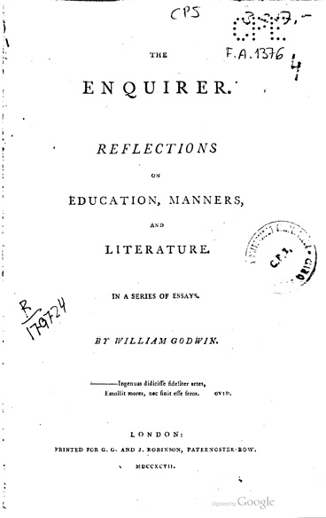
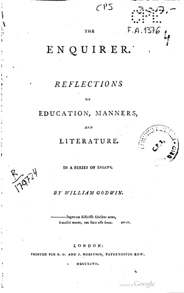

Rescuing Disposable Time from Oblivion
Two hundred years ago last February (2021), Charles Wentworth Dilke anonymously published a pamphlet titled The Source and Remedy of the National Difficulties, deduced from principles of political economy. Four decades later, Karl Marx would describe the pamphlet in his notes as an "important advance on Ricardo." In his preface to volume two of Capital, Friedrich Engels described the pamphlet as the "farthest outpost of an entire literature which in the twenties turned the Ricardian theory of value and surplus value against capitalist production in the interest of the proletariat" and credited Marx with having saved the pamphlet from "falling into oblivion."
In the 1960s and 70s, Marx's notebooks from 1857 to 58 were published in translation as the Grundrisse, a section of which – known as the "fragment on machines" – became the subject of much enthusiastic commentary and theoretical controversy. Some of the most evocative and heralded passages of the fragment dealt with the concept of "disposable time," which Marx had adopted, with citation, from the anonymous pamphlet. But Marx's rescue of the pamphlet from oblivion was far from convincing. With few exceptions, the discourse on Marx's fragment on machines ignored The Source (pun intended) of Marx's category of disposable time.
For Marx, disposable time referred not only to time off work for rest and recreation but more crucially to an explosive contradiction at the heart of the capital accumulation process. Continued accumulation required both the continuous creation and appropriation by capital of ever more disposable time. Marx's fragment on machines was received as prophetic when the translations appeared. It was as if Marx had been anticipating precisely this time -- when automation, computerization, and robotization seemed to either herald "the end of work" or threaten universal precarity. Nevertheless, The Source and Remedy continued to languish in obscurity – if not total oblivion. Few copies and no translation of the pamphlet were to be found in the archives of libraries. Eventually, a microfilm copy of the pamphlet became available in the 1970s as part of the Goldsmiths'-Kress Library of Economic Literature. The full collection of old documents cost around $200,000 in 1978 dollars – the equivalent of $800,000 in current dollars.
In 1999, I posted the first 6 pages of the pamphlet to the TimeWork Web. Five years later, I uploaded a PDF of the full pamphlet to the website of B.C.'s Work Less Party. By 2010 a copy was available on the Marxists Internet Archive. Regardless, Marx scholars continued to ignore the pamphlet, aside from the occasional mention that it was cited by Marx. In 2019, however, the journal Contributions to Political Economy reprinted the pamphlet along with a descriptive essay by Giancarlo de Vivo. This year, my essay commemorating the bicentennial of the pamphlet's publication, "The Ambivalence of Disposable Time: The Source and Remedy of the National Difficulties at Two Hundred," was published last May (2021) in that journal. I am hopeful that the scholarly neglect of the pamphlet will soon end.
In my essay, I documented specific links between the pamphlet's advocacy on behalf of disposable time and William Godwin's exaltation of leisure in his An Enquiry Concerning Political Justice and its influence on morals and happiness and especially in his 1797 book, The Enquirer: reflections on education, manners and literature. In a later book, Thoughts on Man: his nature, productions and discoveries, Godwin confirmed and clarified his earlier ideas about leisure.
While documenting the connections between Godwin's writings about leisure and Dilke's disposable time, an intriguing thought occurred to me. Godwin had been trained as a minister in a strict Calvinist sect and had retained his intellectual orientation as a "Rational Dissenter" long after leaving the church. His discourses on leisure and on occupations ("vocations") can plausibly be regarded as a secular and modernizing reformulation of Calvin's doctrine of the calling. I ran this conjecture by a leading Godwin scholar who found it entirely plausible and consistent with his own writing on Godwin's secularization of religious motifs. "The Calvinist doctrine of the calling," observed William Stafford in 1980, "can be discerned just below the surface of Political Justice."
The continuity between Godwin, Dilke, and Marx raises startling questions about the elective affinities between Marx's class struggle, Godwin's perfectibility of private judgment, and ultimately Calvin's doctrine of Grace. In terms of political activism, the Marx-Dilke-Godwin-Calvin connection suggests possibilities of immanent critique and direct challenge to the proverbial "work ethic" and its deviations: Carlyle's "gospel of work," Carnegie's "gospel of wealth" and, finally, the blasphemous "prosperity gospel" of latter-day television evangelism.
One of my long-running frustrations with ecological economics and the degrowth movement has been its default treatment of work-time reduction as primarily a work-sharing strategy. I have nothing against work-sharing, but my complaint is that it is about the fourth best reason for reducing working time. The top priority is emancipation from social domination through taking back disposable time. Second is the elimination of uncompensated overwork. Third is elimination of the bargaining disadvantage that long hours of work impose on labour. Instead of contesting growth economics on the tilted playing field of the quantity of GDP, attention to the redemptive doctrine of disposable time could help us, in the words of Artemy Magun, to "understand rationally the crucial elements of the religious world-view that have been ignored by modern science, but which nevertheless are highly relevant to orientation in the contemporary world."
In addition to "The Ambivalence of Disposable Time," my bicentennial celebration of the Source and Remedy has included three conference presentations, a 10,000-word manuscript based on my research into the influence of Marx's reception of the Source and Remedy on his category of "socially necessary labour time," two pop-up books, a series of four 3-D animated video pop-up books, and the restoration of this TimeWork Web to house some of the new material and relate it to the research project that began over 26 years ago. I have also revised an older essay of mine, "Labour power as a common-pool resource," to reflect my latest thinking. It is now "Disposable time as a common-pool resource."